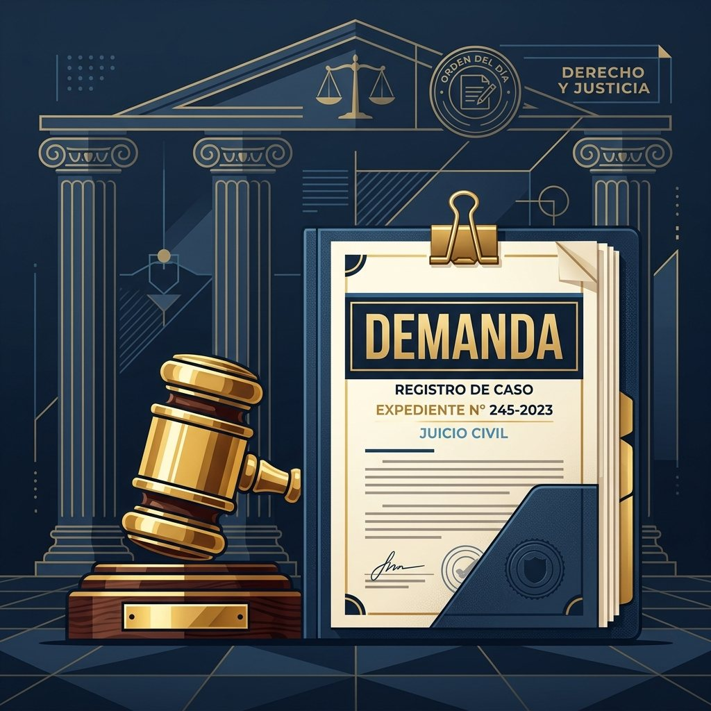

INCUMPLIMIENTO DE CONTRATO POR PARTE DE UNA CONSTRUCTORA.
Las constructoras juegan un papel muy importante como empresas facilitadoras para realizar, administrar o llevar a cabo diferentes actividades del sector inmobiliario, entre ellas, proporcionar acceso a una vivienda digna, por medio de la construcción de proyectos inmobiliarios. Los clientes depositan toda su confianza en la inmobiliaria Constructora al dar este importante paso patrimonial.
Sin embargo, en algunos casos, estas empresas Constructoras pueden llegar a cometer errores o incumplir en alguna de las actividades pactadas en la promesa de compraventa, ocasionando con ello graves inconvenientes no esperados para los compradores.
¿QUÉ PASA SI UNA CLÁUSULA ES ABUSIVA EN UN CONTRATO?
Las cláusulas abusivas podrán presentarse tanto en contratos verbales como escritos. El primer paso fundamental para proteger sus derechos es presentar una reclamación directa ante el proveedor o constructora que le vendió el producto o servicio inmobiliario.
Posteriormente, si no obtiene una respuesta favorable, puede convocar a una conciliación extrajudicial que le permita llegar a un acuerdo de mutuo beneficio. Pero si los dos caminos anteriores no funcionan, usted puede y debe llevar su caso ante un Juez de la República.
¿QUÉ PUEDO HACER SI UNA CONSTRUCTORA ME INCUMPLE CON EL CONTRATO?
El incumplimiento contractual puede manifestarse de diversas maneras: por no entregar el inmueble en la fecha estipulada, por no entregar o entregar incompletas las zonas comunes, por incrementar unilateralmente el valor pactado de un inmueble, por entregar el inmueble en mal estado o con defectos constructivos, e incluso por no devolver los dineros que fueron pagados por el inmueble cuando no se logró completar el pago total y se decide resolver la promesa de mutuo acuerdo o por fuerza mayor.
También suele suceder que las constructoras intenten incrementar de manera forzada el valor final del inmueble, obligando a que usted como comprador sea coaccionado para la firma de otrosí, adendas, u otros contratos que busquen cambiar lo pactado en el contrato inicial bajo amenaza de perder su cupo o el dinero ya abonado.
En algunas oportunidades las constructoras, al terminar el proyecto, no entregan las zonas comunes, retrasando la entrega de la administración a los copropietarios o la constitución formal de la persona jurídica de la propiedad horizontal. Esto impide que los copropietarios de los conjuntos residenciales sean los que decidan en adelante qué se debe hacer para el beneficio común, conozcan las cuentas reales, ejecuten las obras necesarias para el mantenimiento, y puedan finalmente gobernarse para mejorar la convivencia.

Cuando usted tiene algún tipo de estas dificultades, el primer paso administrativo es poner una queja en la alcaldía municipal o la personería correspondiente (área de control de vivienda). Si usted no encuentra respuesta satisfactoria a su queja en la alcaldía, el siguiente paso legal es interponer una demanda civil ante un Juez de la República, o, dependiendo de la conducta, una acción de protección al consumidor ante la Superintendencia de Industria y Comercio (SIC).
Con estas acciones, usted podrá reclamar a la constructora el cumplimiento del contrato y el pago de una indemnización por daños y perjuicios o la aplicación de la cláusula penal sancionatoria. Esta última es una cláusula de penalización que debe estar debidamente consignada desde el principio en la promesa de compraventa.
Cuando una constructora no cumple con lo acordado en el contrato (como es la entrega material del inmueble, o luego de la entrega material, la escrituración, o si no se entregan las zonas comunes), usted puede pedir ante un Juez el cumplimiento de lo acordado por medio de una Demanda Ejecutiva, además de solicitar el resarcimiento de los daños causados, los cuales abarcan desde intereses por mora hasta Lucro Cesante y Daño Emergente.
¿CUÁLES SON LOS REQUISITOS PARA DEMANDAR A UNA CONSTRUCTORA?
Para entablar una demanda formal se requiere contar con la promesa de compraventa original, soportes de todos los pagos realizados (recibos, consignaciones, facturas), la reclamación directa previa enviada por escrito a la constructora junto con su constancia de recibido, el folio de matrícula inmobiliaria si existe, y las pruebas del incumplimiento (registros fotográficos, peritajes técnicos de zonas comunes o privadas, correos electrónicos u otrosíes que pretendían imponer).
¿CUÁNTO TIEMPO HAY PARA CONTESTAR UNA DEMANDA?
El término legal para contestar la demanda civil ordinaria es de 20 días hábiles, los cuales empiezan a contar a partir del día siguiente a la notificación personal de la demanda al demandado.
¿CUÁNDO HAY INCUMPLIMIENTO DE CONTRATO?
Existe incumplimiento contractual cuando una de las partes que han suscrito la promesa o contrato deja de ejecutar, ejecuta de manera tardía o ejecuta de forma defectuosa una o varias de las cláusulas y obligaciones estipuladas y acordadas expresamente en el documento.
¿CUÁNDO PUEDO DEMANDAR POR DAÑOS Y PERJUICIOS A UNA CONSTRUCTORA?
Usted puede interponer una demanda de responsabilidad civil por daños y perjuicios cuando los trabajadores, constructores o representantes de la constructora han cometido un hecho generador de un daño real y, por consiguiente, ese daño ha ocasionado un perjuicio evaluable económicamente en su persona, su patrimonio o en una comunidad de propietarios.
Algunos ejemplos claros de estas situaciones incluyen:
- Por obras en mal estado, grietas estructurales o defectos de construcción.
- Por incumplimiento en la fecha de entrega material de las viviendas.
- Por incumplimiento en la terminación y entrega de las zonas comunes.
- Por mala calidad de los materiales de la obra contrarios a lo ofrecido en la publicidad.
- Por daños materiales graves causados a los predios colindantes durante la excavación.
- Por accidentes graves o muerte de un transeúnte debido a la falta de medidas de seguridad en la obra.
- Por muerte de uno de sus trabajadores debido a la negligencia en sistemas de seguridad y salud en el trabajo.
CLÁUSULAS ABUSIVAS EN CONTRATOS CON CONSTRUCTORAS
- Falta de reciprocidad de las prestaciones en caso de desistimiento del contrato: El principio de equivalencia de las prestaciones debe regir cualquier vínculo contractual para evitar un desequilibrio acentuado a favor de una de las partes. En la promoción y compraventa inmobiliaria, el promotor usualmente confecciona unilateralmente los contratos y predispone su contenido sin aceptar negociación alguna. Las cláusulas comunes establecen altas penalizaciones (ej: 10% o 20% del valor total) para el comprador si desiste, pero no contemplan ninguna sanción idéntica o recíproca para la constructora si es esta quien desiste o se retrasa en entregar. Esto es una cláusula abusiva por desequilibrio contractual.
- La imposición al comprador del pago de impuestos correspondientes al vendedor: Cláusulas que pretenden trasladar al comprador la obligación de pagar el Impuesto sobre el Incremento de Valor de los Terrenos de Naturaleza Urbana (comúnmente conocido como la plusvalía municipal), el cual por ley corresponde pagar al enajenante (vendedor).
- Obligar al comprador a subrogarse en la hipoteca del promotor: Forzar al adquirente a asumir y subrogarse en el crédito hipotecario solicitado por el promotor-vendedor para financiar la construcción del edificio, impidiéndole elegir libremente su entidad crediticia o penalizándolo si decide pagar con recursos propios o de otro banco.
- Facultar al vendedor a alterar el precio de la vivienda unilateralmente: El precio es un elemento esencial del contrato de compraventa y no puede ser modificado al libre albedrío del vendedor durante la construcción. Únicamente podría admitirse un ajuste de precio si existiera una causa objetiva perfectamente justificada y previsible, y siempre y cuando se permita al comprador desistir del contrato sin penalización alguna si el aumento ocurre.
Como conclusión, no existe una lista única de cláusulas abusivas. Cada contrato debe someterse a un riguroso control de legalidad personalizado para verificar que la constructora no haya introducido estipulaciones abusivas en perjuicio de los compradores de vivienda sobre planos o en construcción.
TE CONTAMOS UNA HISTORIA
Marta y Fabio están recién casados, por tal motivo decidieron comprar un apartamento nuevo. De muchas opciones, contrataron con la oferta que les pareció más favorable. El apartamento tenía un valor de $430.000.000 COP. Ellos debían cancelar la primera cuota inicial por un valor de $126.000.000 COP, pactada en una cuota inicial de $5.000.000 COP y 40 cuotas mensuales de $3.025.000 COP, dejando el restante de $304.000.000 COP para financiamiento mediante crédito hipotecario.
Marta y Fabio cumplen de manera puntual con sus cuotas mensuales durante más de un año. Sin embargo, debido a una compleja situación económica familiar, deciden hacer la cesión del contrato de compraventa a un amigo cercano interesado y con capacidad financiera. Para este trámite, solicitan formalmente el servicio de asesoría y aprobación a la constructora.
La constructora se niega rotundamente a dicha petición sin ningún tipo de argumentos válidos y sin justificación jurídica alguna. La cesión de la posición contractual es una facultad propia en este tipo de negocios. La constructora simplemente se limita a registrar por correo electrónico que no aprueba la cesión.
La constructora desconoce la naturaleza de las relaciones contractuales y no tiene en cuenta las cláusulas legítimas de cesión. Sin embargo, unos días después y tras la insistencia de la pareja, la constructora los llama para decirles que SÍ aceptará la cesión del contrato, pero bajo una condición supremamente ABUSIVA: exigen que la persona que asuma el contrato pague el apartamento por un valor de Quinientos Trece Millones de Pesos ($513.000.000 COP), es decir, con un incremento injustificado de $83.000.000 COP sobre el precio original acordado.
En este breve relato observamos un claro ejemplo de cómo muchas constructoras e inmobiliarias imponen cláusulas y cobros abusivos dentro de sus contratos de adhesión, aprovechándose de la necesidad de los compradores.
¿Problemas con una Constructora o Promesa de Compraventa?
No arriesgue los ahorros de su vida. Reciba asesoría jurídica experta y prioritaria de forma inmediata directamente con nuestra abogada experta Jessica Lorena Ramírez a través de WhatsApp.
Asesoría Gratuita por WhatsAppTE INVITAMOS A QUE CONOZCAS NUESTROS SERVICIOS EN ASESORIA JURIDICA
Ofrecemos representación integral en derecho inmobiliario, comercial, administrativo y litigios civiles en toda Colombia.
Contáctanos Hoy